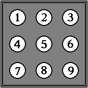

★PROGRAMMER'S GUIDE
★BOOT ROMユーザーズマニュアル/
★PROGRAMMER'S GUIDE
★BOOT ROMユーザーズマニュアル/
 |
この機能は、BOOT ROMの機能ではありません。 各アプリケーションで対応してください。 |
| コメント: | データの名前の補助表示。 |
| 使用量: | 各データの容量。ゲームによって使用する容量は異なります。 |
| 空き容量: | バックアップRAMの未使用容量。方向ボタンの上下でデータがスクロールします。 |
|
この機能は、BOOT ROMの機能ではありません。 各アプリケーションで対応してください。 |
| 方向ボタン： | 選択／移動 |
|---|---|
| スタートボタン： | ゲームスタート |
| Ａボタン： | 決定 |
| Ｂボタン： | 取り消し |
| Ｃボタン： | 決定 |
| Ｘボタン： | １曲リピート |
| Ｙボタン： | 停止 |
| Ｚボタン： | 再生／一時停止 |
| Ｌボタン： | ※曲戻し(スキップ＆サーチ) |
| Ｒボタン： | ※曲送り(スキップ＆サーチ) |

|
アプリケーションでは、ユーザが設定した日付、時刻を利用することができますが、変更してはいけません。日付、時刻を変更するには、ユーザに日付、時刻の設定画面で設定してもらう必要があります。 |
|
多国語対応のアプリケーションは、デフォルトの言語をこのユーザ設定の言語から決める必要があります。また、アプリケーション内で対応言語をユーザが変更する機能がある場合には、マルチプレイヤーの言語の設定に 反映されるように所定の方法によって設定を変更する必要があります。 |
|
ヘルプウィンドウの設定は、アプリケーションから参照も変更もしてはいけません。 |
|
モノラル対応のアプリケーションは、デフォルトの音声出力設定をこのユーザ設定の音声出力設定から決める必要があります。また、アプリケーション内で音声出力設定をユーザが変更する機能がある場合には、 マルチプレイヤーの音声出力設定に反映されるように所定の方法によって設定を変更する必要があります。 |
|
効果音の設定は、アプリケーションから参照も変更もしてはいけません。 |
★PROGRAMMER'S GUIDE
★BOOT ROMユーザーズマニュアル/